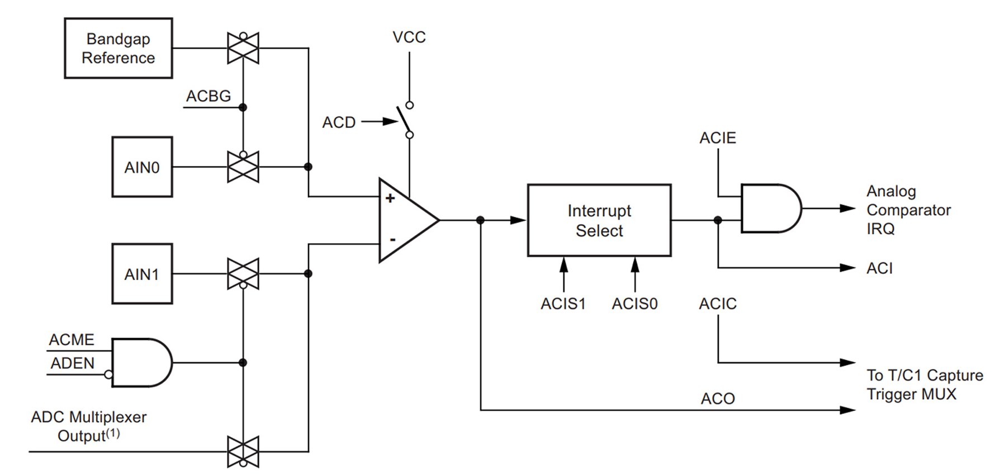
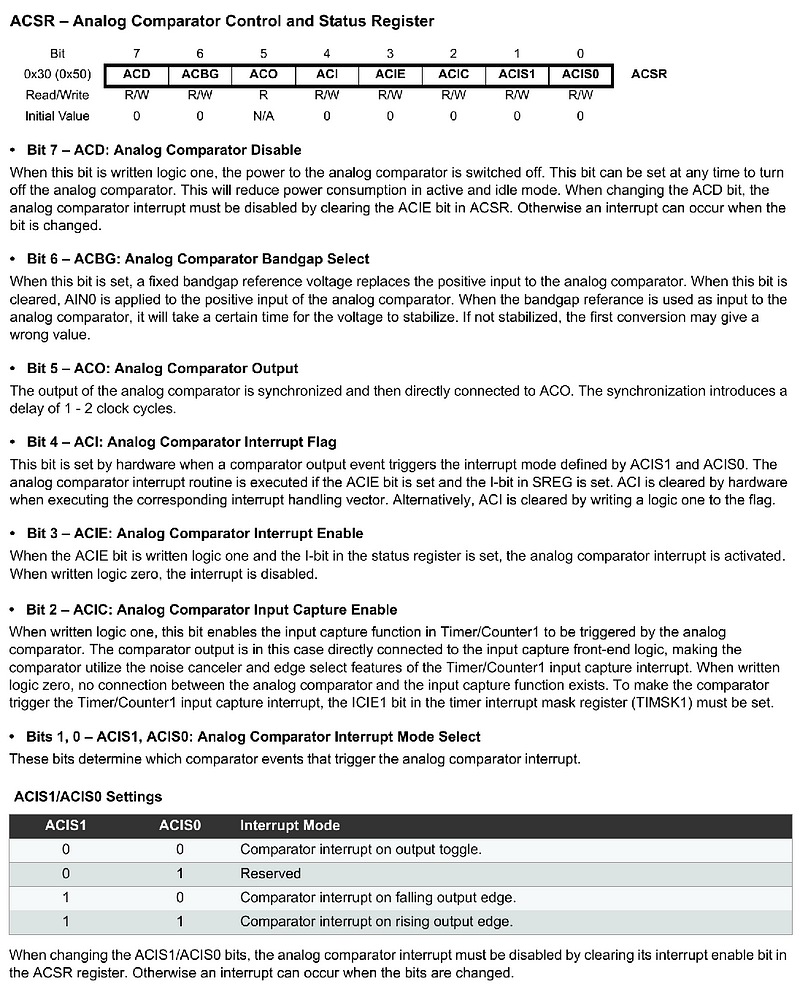
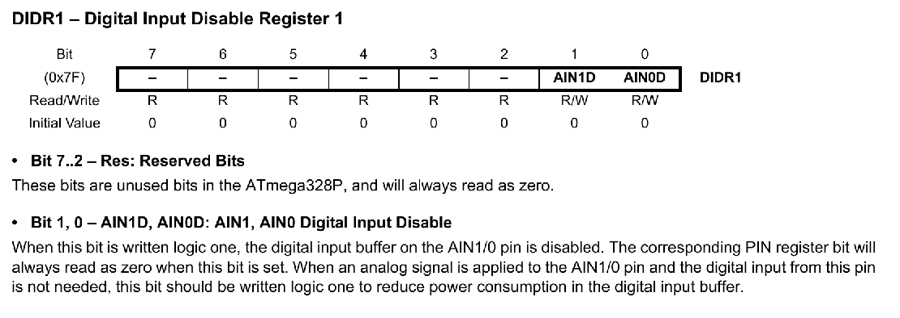
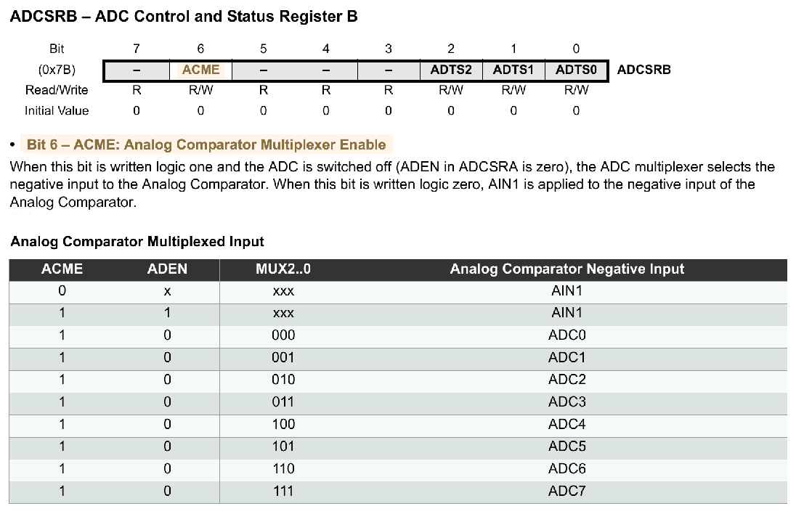
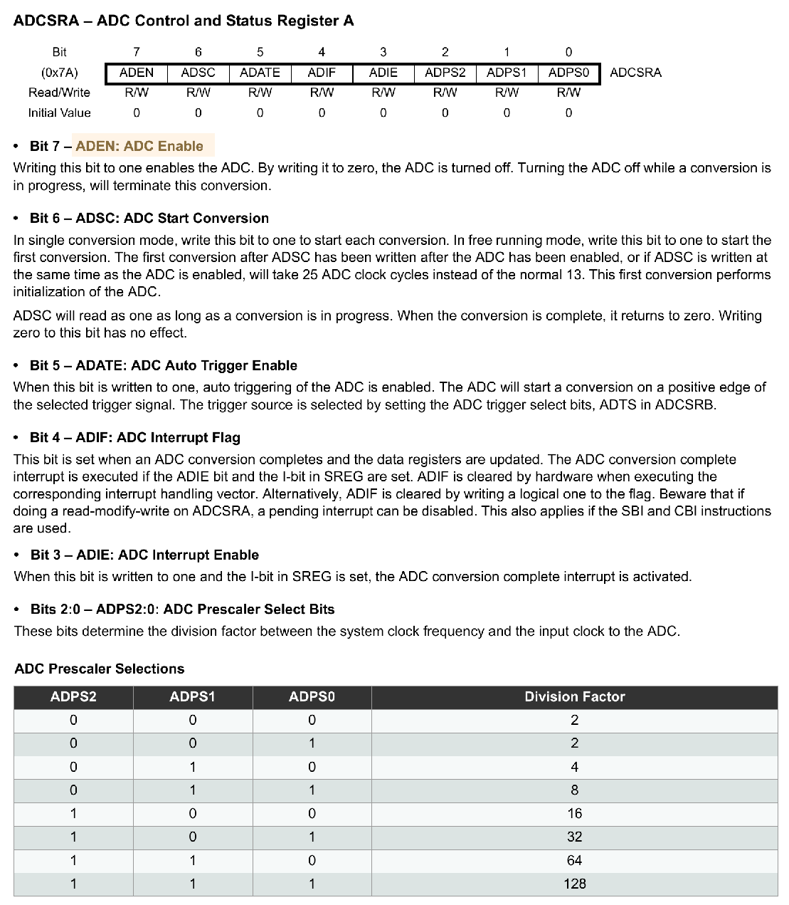
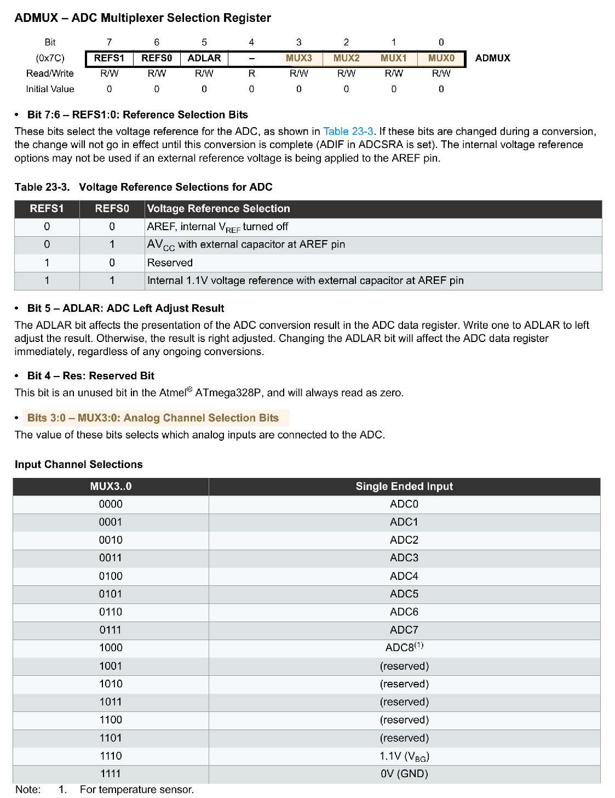
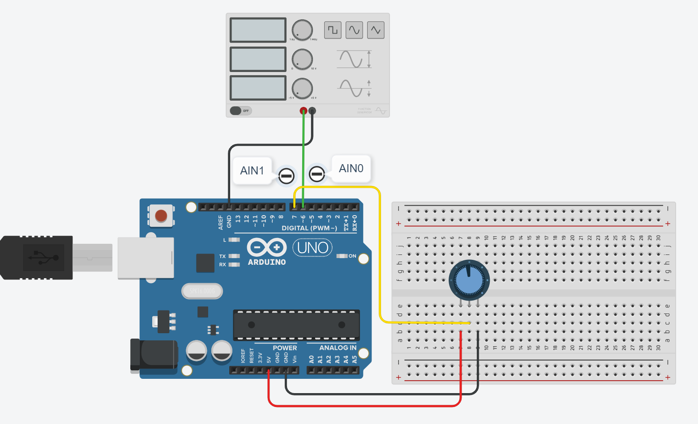
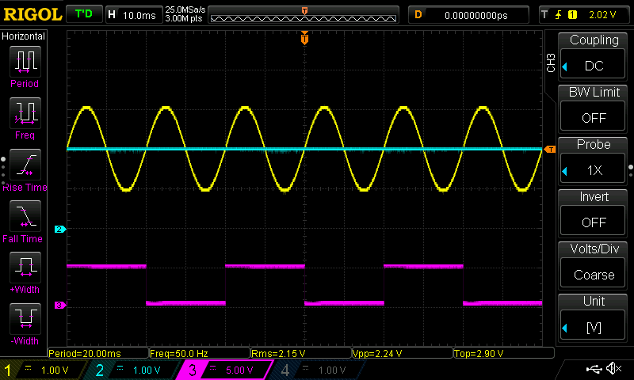
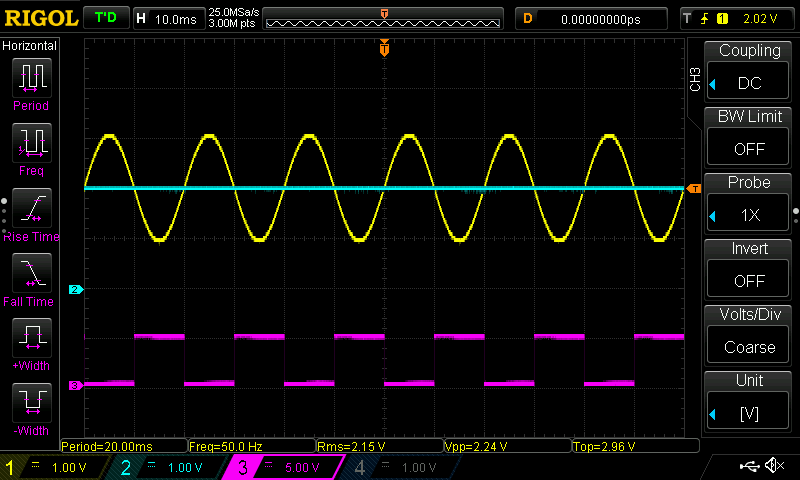
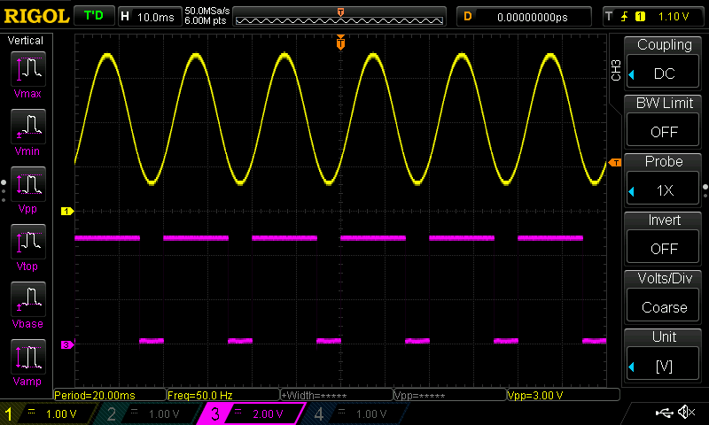

การเขียนโปรแกรมภาษา C สำหรับ AVR (ATmega328P): ตอนที่ 10#
Keywords: Atmel AVR MCU, ATmega328P, Bare-metal C Programming, AVR-GCC, avr-libc
▷ การเขียนโปรแกรมภาษา C แบบ Bare-Metal และการใช้ไลบรารี avr-libc#
บทความในตอนที่ 10 สาธิตตัวอย่างการเขียนโค้ดภาษา C เพื่อใช้งานวงจรที่เรียกว่า Analog Comparator หรือ วงจรเปรียบเทียบแรงดันภายในชิป ATmega328P
รายละเอียดเกี่ยวกับรีจิสเตอร์ที่เกี่ยวข้องกับการทำงานของ Analog Comparator สามารถดูได้เอกสารของผู้ผลิต ATmega328P Datasheet
▷ วงจร Analog Comparator#
ชิป ATmega328P มีวงจรเปรียบเทียบแรงดันไฟฟ้า (Voltage Comparator หรือ Analog Comparator) ซึ่งใช้กับสัญญาณแอนะล็อก โดยจะเปรียบเทียบระดับแรงดันของสัญญาณอินพุต IN+ (Positive Input) กับ IN- (Negative Unput) และให้ค่าเอาต์พุตเป็นลอจิก 1 เมื่อ IN+ มากกว่า IN- หรือได้ค่าเป็นลอจิก 0 ถ้าไม่เป็นไปตามเงื่อนไขดังกล่าว

รูป: บล็อกไดอะแกรมของ Analog Comparator
สัญญาณอินพุตสำหรับ IN+ เลือกได้จากแหล่งที่มาต่อไปนี้ โดยจะต้องกำหนดค่าบิต
ACBG (Analog Comparator Bandgap Select)
ในรีจิสเตอร์ ACSR (Analog Comparator Control and Status)
ACBG=0: ใช้แรงดันอินพุตที่รับจากขา AIN0 (PD6 Pin)ACBG=1: ใช้แรงดันอ้างอิงจากวงจรภายใน (Bandgap Reference Voltage) มีค่าประมาณ 1.1V (+/-0.1V) สำหรับแรงดันไฟเลี้ยง VCC=+5V
สัญญาณอินพุตสำหรับ IN- เลือกได้จากแหล่งที่มาต่อไปนี้ โดยจะต้องกำหนดค่าบิต
ACME (Analog Comparator Multiplexer Enable)
ในรีจิสเตอร์ ADCSRB (ADC Control and Status Register B)
ACME=0: ใช้แรงดันอินพุตที่รับจากขา AIN1 (PD7 Pin)ACME=1: ใช้แรงดันอินพุตที่เลือกจากวงจร ADC Multiplexer ซึ่งสามารถเขียนโปรแกรมให้เลือกจากอินพุตที่ขา A0 - A7 ได้ แต่วงจร ADC จะต้องถูกปิดการใช้งาน (โดยกำหนดให้บิตADEN=0ในรีจิสเตอร์ADCSRA)
การเปิดใช้งานวงจร Analog Comparator
จะต้องมีการกำหนดค่าบิต ACD (Analog Comparator Disable) ในรีจิสเตอร์
ACSR ให้เป็น 0 แต่ถ้า ACD=1 จะเป็นการปิดการใช้งานวงจรนี้
ผลการเปรียบเทียบหรือค่าเอาต์พุตของวงจรเปรียบเทียบ สามารถอ่านได้จากบิต
ACO (Analog Comparator Output) ในรีจิสเตอร์ ACSR
ในกรณีที่จะใช้ขา AIN0 และ AIN1 สำหรับการเปรียบเทียบแรงดัน จะต้องกำหนดค่าบิต
AIN0D และ AIN1D ในรีจิสเตอร์ DIDR1 ให้เป็น 1
เพื่อปิดการใช้งาน Digital Input Buffer ที่ขาทั้งสอง
ผลการเปรียบเทียบระดับแรงดันอินพุต สามารถนำไปใช้งานในกรณีต่อไปนี้ได้
- สร้างอินเทอร์รัพท์ (Analog Comparator Interrupt) โดยเลือกเงื่อนไขตามสถานะลอจิกของเอาต์พุต
และกำหนดค่าบิต
ACIS[1:0]เช่น เมื่อเกิดขอบขาขึ้น (Rising Edge) หรือ ขอบขาลง (Falling Edge) หรือ ทั้งสองกรณี (Output Toggle)
และกำหนดค่าบิตACIE=1(Analog Comparator Interrupt Enable) เพื่อเปิดใช้งานอินเทอร์รัพท์ ในขณะที่บิตACIในในรีจิสเตอร์ACSRจะถูกใช้สำหรับการตรวจสอบหรือเคลียร์ Analog Comparator Interrupt Flag - สร้างเงื่อนไข (Trigger Condition)
สำหรับการอ่านและบันทึกค่าตัวนับของวงจร 16-bit Timer1/Counter1 โดยอัตโนมัติ
ในกรณีนี้จะต้องกำหนดค่าบิต
ACIC(Analog Comparator Input Capture) ในรีจิสเตอร์ACSRให้ถูกต้องก่อนเริ่มใช้งาน

รูป: รีจิสเตอร์ ACSR ของวงจร Analog Comparator

รูป: รีจิสเตอร์ DIDR1 สำหรับขา AIN0/PD6 และ AIN1/PD7

รูป: รีจิสเตอร์ ADCSRB ของวงจร ADC

รูป: รีจิสเตอร์ ADCSRA ของวงจร ADC

รูป: รีจิสเตอร์ ADMUX ของวงจร ADC
▷ โค้ดตัวอย่างที่ 1#
โค้ดตัวอย่างแรกสาธิตการใช้วงจรเปรียบเทียบแรงดัน โดยเลือกใช้อินพุตที่ขา AIN0 และ AIN1
นำมาเปรียบเทียบกัน ผลการเปรียบเทียบจะถูกนำไปใช้ในการสร้างอินเทอร์รัพท์ (เมื่อเอาต์พุตเกิดขอบขาขึ้น)
ฟังก์ชัน ISR ที่เกี่ยวข้องกับอินเทอร์รัพท์ (ANALOG_COMP_vect)
จะทำหน้าที่สลับสถานะลอจิกที่ขาเอาต์พุต PB5 ซึ่งใช้ในการตรวจสอบว่า มีการเกิดอินเทอร์รัพท์ขึ้น
#include <avr/io.h>
#include <avr/interrupt.h>
// Global variable
uint8_t led_state = 0; // Used to keep the LED output state.
void initAnalogComparator() {
// Disable the digital input buffer on AIN0 and AIN1 pins.
DIDR1 |= (1 << AIN1D) | (1 << AIN0D);
// Use the AIN0/PD6 and AIN1/PD7 pins as analog inputs.
// AIN0 is connected to the positive input.
// AIN1 is connected to the negative input.
ADCSRB &= ~(1 << ACME);
// Enable the analog comparator.
ACSR &= ~(1 << ACD);
// Enable Analog Comparator Interrupt on Rising Edge.
ACSR |= (1 << ACIE) | (1 << ACIS1) | (1 << ACIS0);
}
int main() {
DDRB |= (1 << DDB5); // Set PB5 as output.
initAnalogComparator(); // Initialize the analog comparator.
sei(); // Enable global interrupts.
while (1) {}
}
// Interrupt Service Routine for Analog Comparator
ISR(ANALOG_COMP_vect) {
led_state ^= 1; // Toggle the LED output pin.
if (led_state) { PORTB |= (1 << PB5); }
else { PORTB &= ~(1 << PB5); }
}
ตัวอย่างรูปสัญญาณเอาต์พุต เมื่อป้อนสัญญาณรูปคลื่นไซน์ (Sine Wave, Vpp=2V, Voffset=1V หรือ Vlow=1V และ Vhigh=3V) และนำไปต่อเข้ากับขา AIN0 (Arduino D6 Pin) ในขณะที่ขา AIN1 (Arduino D7 Pin) รับอินพุตจากวงจรแบ่งแรงดันไฟฟ้า โดยใช้ตัวต้านทานปรับค่าได้ขนาด 10k โอห์ม
แนะนำให้ต่อตัวเก็บประจุไฟฟ้าขนาด 0.1uF อย่างละหนึ่งตัว เพิ่มที่ขา AIN0 และ AIN1 ไปยัง GND เพื่อลดปัญหาสัญญาณรบกวนที่เกิดขึ้นกับสัญญาณอินพุต

รูป: แนวทางการต่อวงจรทดลองโดยใช้บอร์ด Arduino Uno เครื่องสร้างสัญญาณ และวงจรแบ่งแรงดันไฟฟ้า

รูป: คลื่นสัญญาณที่วัดได้โดยใช้เครื่องออสซิลโลสโคปแบบดิจิทัล CH1: สัญญาณอินพุตรูปคลื่นไซน์ที่ขา AIN0/PD6 CH2: สัญญาณจากวงจรแบ่งแรงดันไฟฟ้าที่ขา AIN1/PD7 และ CH3: สัญญาณเอาต์พุตที่ขา PB5
▷ โค้ดตัวอย่างที่ 2#
โค้ดตัวอย่างนี้แตกต่างจากตัวอย่างที่แล้วเพียงเล็กน้อย โดยเปลี่ยนเงื่อนไขการเกิดอินเทอรัพท์ดังนี้
เมื่อเอาต์พุตของวงจรเปรียบเทียบ มีการเปลี่ยนแปลงสถานะลอจิก (Toggle Output) ให้สร้างอินเทอร์รัพท์
และมีการเรียกฟังก์ชัน ISR (ANALOG_COMP_vect) ที่เกี่ยวข้องให้ทำงาน
โดยจะสลับสถานะลอจิกที่ขาเอาต์พุต PB5
#include <avr/io.h>
#include <avr/interrupt.h>
void initAnalogComparator() {
// Disable the digital input buffer on AIN0 and AIN1 pins.
DIDR1 |= (1 << AIN1D) | (1 << AIN0D);
// Use the AIN0/PD6 and AIN1/PD7 pins as analog inputs.
// AIN0 is connected to the positive input.
// AIN1 is connected to the negative input.
ADCSRB &= ~(1 << ACME);
// Enable Analog Comparator Interrupt on Both Edge.
ACSR &= ~(1 << ACD);
ACSR &= ~((1 << ACIS1) | (1 << ACIS0));
ACSR |= (1 << ACIE);
}
int main() {
DDRB |= (1 << DDB5); // Set PB5 as output.
initAnalogComparator(); // Initialize the analog comparator.
sei(); // Enable global interrupts.
while(1) {}
}
ISR(ANALOG_COMP_vect) {
PINB |= (1 << PB5); // Toggle the PB5 output pin.
}

รูป: คลื่นสัญญาณที่วัดได้โดยใช้เครื่องออสซิลโลสโคปแบบดิจิทัล CH1: สัญญาณอินพุตรูปคลื่นไซน์ที่ขา AIN0/PD6 CH2: สัญญาณจากวงจรแบ่งแรงดันไฟฟ้าที่ขา AIN1/PD7 และ CH3: สัญญาณเอาต์พุตที่ขา PB5
▷ โค้ดตัวอย่างที่ 3#
โค้ดตัวอย่างนี้ มีการเลือกใช้สัญญาณอินพุตที่ขา AIN1 และนำมาเปรียบเทียบกับแรงดันอ้างอิงภายใน
และเมื่อเอาต์พุตของวงจรเปรียบเทียบมีการเปลี่ยนแปลงค่าลอจิก ให้สร้างอินเทอร์รัพท์
และมีการเรียกฟังก์ชัน ISR (ANALOG_COMP_vect) ที่เกี่ยวข้องให้ทำงาน
โดยจะสลับสถานะลอจิกที่ขาเอาต์พุต PB5
#include <avr/io.h>
#include <avr/interrupt.h>
void initAnalogComparator() {
// Disable the digital input buffer on the AIN1/PD7 pin.
DIDR1 |= (1 << AIN1D);
// The AIN0/PD6 pin is not used.
// The positive input of the comparator is connected to
// the internal bandgap reference voltage.
// The AIN1/PD7 pin is connected to the negative input.
ADCSRB &= ~(1 << ACME);
// Enable Analog Comparator Interrupt on Both Edge.
ACSR &= ~(1 << ACD);
ACSR &= ~((1 << ACIS1) | (1 << ACIS0));
ACSR |= (1 << ACBG);
ACSR |= (1 << ACIE);
}
int main() {
DDRB |= (1 << DDB5); // Set PB5 as output.
initAnalogComparator(); // Initialize the analog comparator.
sei(); // Enable global interrupts.
while(1) {}
}
ISR(ANALOG_COMP_vect) {
PINB |= (1 << PB5); // Toggle the PB5 output pin.
}

รูป: คลื่นสัญญาณที่วัดได้โดยใช้เครื่องออสซิลโลสโคปแบบดิจิทัล CH1: สัญญาณอินพุตรูปคลื่นไซน์ที่ขา AIN1/PD7 และ CH3: สัญญาณเอาต์พุตที่ขา PB5
▷ โค้ดตัวอย่างที่ 4#
โค้ดตัวอย่างนี้สาธิตการเลือกใช้ขา AIN0 และ A0 เพื่อนำมาใช้เป็นอินพุตสำหรับวงจรเปรียบเทียบสัญญาณแอนะล็อก
#include <avr/io.h>
#include <avr/interrupt.h>
void initAnalogComparator() {
// Disable the digital input buffer on AIN0 and AIN1 pins.
DIDR0 |= (1 << AIN0D);
// Compare AIN0 with A0 pins
ADCSRB |= (1 << ACME);
ADCSRA &= ~(1 << ADEN); // Disable ADC
ADMUX = 0; // Select A0 input (0b000..0b111 for A0..A7)
ACSR &= ~((1 << ACD) | (1 << ACBG));
// Enable Analog Comparator Interrupt on Both Edge.
ACSR &= ~((1 << ACIS1) | (1 << ACIS0));
ACSR |= (1 << ACI) | (1 << ACIE);
}
int main() {
DDRB |= (1 << DDB5); // Set PB5 as output.
initAnalogComparator(); // Initialize the analog comparator.
sei(); // Enable global interrupts.
while(1) {}
}
ISR(ANALOG_COMP_vect) {
PINB |= (1 << PB5); // Toggle the PB5 output pin.
}
▷ กล่าวสรุป#
บทความนี้ได้นำเสนอตัวอย่างการเขียนโค้ดภาษาซี เพื่อใช้งานวงจร Analog Comparator ภายในชิป ATmega328P และตัวอย่างการเลือกใช้ช่องสัญญาณแอนะล็อกสำหรับการเปรียบเทียบแรงดันไฟฟ้า การกำหนดเงื่อนไขในการเกิดอินเทอร์รัพท์จากเอาต์พุตของวงจรเปรียบเทียบแรงดัน และการตอบสนองต่อการเกิดอินเทอร์รัพท์ด้วยฟังก์ชัน ISR ที่เกี่ยวข้อง
This work is licensed under a Creative Commons Attribution-ShareAlike 4.0 International License.
Created: 2024-01-04 | Last Updated: 2024-01-04